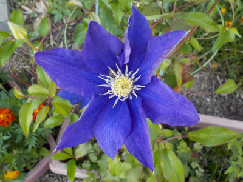
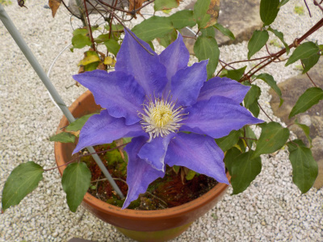
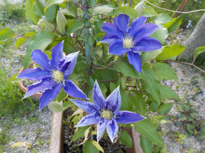
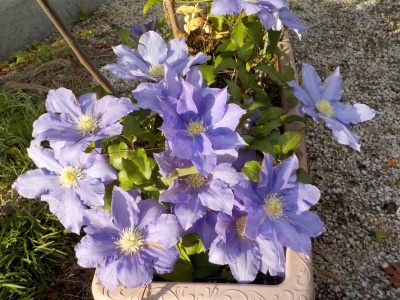
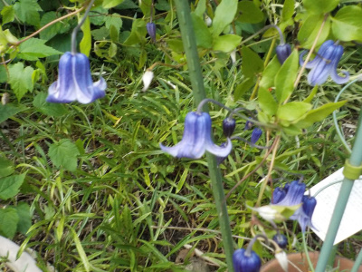

クレマチスが2回目の開花シーズンです。
更新日 : 2019/07/15
今年は2回目も沢山咲きそうです。

1回目よりも小さいですが、色は濃いかな。
更新日 : 2019/07/15
今年は2回目も沢山咲きそうです。

1回目よりも小さいですが、色は濃いかな。
更新日: 2020/05/10

家のクレマチスが母の日に咲いてよかったです。
今年はショップで、クレマチスのキフトを見なかったきがする。
まあ、新型コロナがあるのであまり商品を見ていないだけかもしれないです。
更新日: 2021/04/24

咲いたばかりのクレマチスです。
まだ開ききっていないものもあります。
この株は蕾が沢山出来ているので賑やかになりそうです。
更新日: 2021/05/02

沢山咲いて綺麗だったんですが、ピークを超えました。
早いものは花びらを落としています。
今咲いているものも花色が薄くなっているので、あと数日で散りそう。
母の日には花がなさそうです。
更新日: 2021/08/22

次々と咲いていい感じです。
ツル伏せで増やしたいですが。ツルが上に向って伸びているので地面に付ける事が出来ません。
何かいいアイデアがないか調べてみようと思います。
クレマチスは母の日に咲かないと意味ないじゃんと思う。